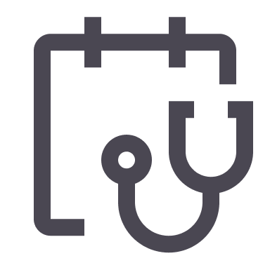
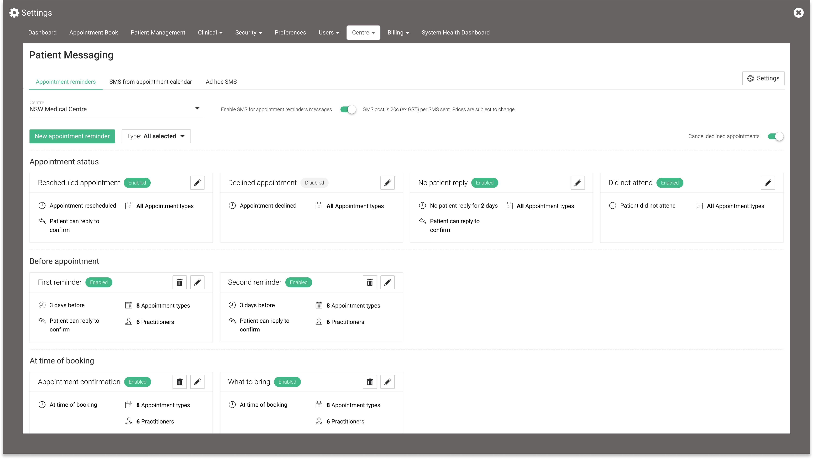

Back home
Helix
Enhancing patient communications in Healthcare
summary
At Telstra Health I was tasked with redesigning the patient communications system for General Practices using Helix. The resulting design automated processes for practices, drove Helix revenue and delivered a safe and reliable experience.

Process followed for this project
Why patient communications is important for practices

Medico-legal obligations
Patient communications is one of the most important parts of running a medical practice and delivering effective care. Patients rely on communications channels to schedule, confirm and attend their appointments, be aware of changes to appointments as well as to receive information and results from the practice.
Effective patient communication also represents an opportunity to ensure that patient’s receive the best medical care and attention and that practices fulfil their medico-legal obligations. Ensuring patient’s attend appointments and avoiding no-shows also allows practices to make the most use of practitioner time and maximise revenue.
The challenges with patient communications
The wide range of situations, patients and timings required for patient communications make it’s management complex.
1
Patient groups differ in their requirements
Different patient groups require different levels of attention and detail depending on their specific needs and particularly vulnerable patient groups such as those with chronic conditions or at-risk young patients require ongoing and detailed communications.
2
Method of communication is important
To complicate things further, different age groups respond differently to method of communication. Practices report that young people are often hesitant to answer phone calls making this difficult.
3
Large time sink for practices
This complex nature is a significant administrative burden for the practice and takes up a lot of time for staff at all levels keeping track of if and when patients have been contacted, it also generates room for human error to occur when trying to keep track of communications.
coinciding with business goals
As well as addressing user needs this project was a consistent ask from corporate clients, would fit in with broader business goals of automating processes and would drive revenue as practices pay per message sent
Helix was falling short in patient communications
When speaking to practices the current way that Helix manages patient communications was falling short and uptake was low. The key finding was that the current system was not flexible enough to accomodate the range of situations that practices wanted to send communications for, with Helix providing only one message template sent either 24 or 48 hours before an appointment.
1
Dealing with high-risk patients
There was a group of practices that ensuring the patient was prepared for and attended the consult was incredibly important. For youth mental health providers the patients were high risk and needed several reminders of the consult to ensure they attended and these attempts needed to be tracked.
2
Appointments made far in advance
For specialist practices the appointments were often made many months in advance, could require documents or tests to be performed prior and were difficult to reschedule and therefore patients needed to be reminded at a longer timeframe to prepare.
3
Keeping a record for patients
Additionally, patients would also call up practices asking to be reminded of details of their appointments as details weren’t sent at the time of booking.
impact
Helix’s communication system did not accommodate these scenarios and owing to these shortcomings, practices were having to call patients or manually write text messages. This was a significant administrative burden and documenting this to cover the practices medico-legal obligations was difficult if not impossible.
Uncovering insights

8 participants

Doctors, practice managers and reception staff
Specialist, general and youth mental health practices
Semi-structured interviews
The initial phase of this project involved user interviews with doctors, practice managers and reception staff from specialist, general and youth mental health practices to find the key attitudes, behaviours and goals of patient communication as well as how this differs between practices. Of particular importance were why practices want to contact patients, the content they want to send, at what point in the consult flow they wanted to send these messages and when practices want to send messages to groups rather than individual patients.
1
Goals of practices
The key goals of practices with patient communications were to address patients not showing up for consults and increasing revenue for the practices. For some practices getting a patient to a consult was critical and they had specific needs around this.
2
Attitude of practices
The attitude towards patient communications were that it is a time-consuming and inefficient process that has important consequences for patient care and medico-legal obligations. Practices were currently resorting to time consuming and unreliable phone calls to inform patients of appointments, with younger patients often being difficult to contact through this method. Or using third party software to contact patients which wasn’t integrated with Helix resulting in two systems to manage
3
When and what practices are sending
A large proportion of what practices send to patients is tied to appointments. Either when the patient books an appointment, is reminded for an appointment or after appointment for billing or further information

User journey for patient communications. Patients can be contacted at many points before, during and after a consult
actioning findings
Understanding the needs, goals and current behaviours of practices provides clear direction to improve patient messaging in Helix.
Design direction

The user research elucidated the key set of challenges that the design would have to address. It would need to accommodate all practice needs for appointment types, practitioners and appointment status changes. It would need to give the option to send a message at the time of booking or after an appointment. The system would have to be automated to the best extent possible to ensure adoption from practices and it would have to be designed in a flexible manner to ensure that it accommodates future changes.
1
Accommodate the scenarios practices wanted to send messages
A key finding was that there were numerous situations that practices wanted to send messages that were related to appointments.
2
Send messages at the time of booking or after an appointment
Patients need to know when their appointment is booked and have a record of this. For the specialist market the booking might be 6 months in the future. Practices reported that they want to send messages after the appointment to follow up billing or for after-care.
3
Send out messages based on different events
Practices want to send different messages based on the status of an appointment including if a patient hasn’t replied to confirm the first booking or following up if a patient cancels.
4
Accommodate appointment types and practitioners
Practices want to send out different messages for different appointments. e.g. an address for an in-person appointment and a link for a tele-health appointment.
Dashboard

Choosing selections for when and to who to send appointment reminders
The dashboard gives an overview of the appointment reminders that have been set, when they are sent, the appointment types that it is sent for, the practitioners it would be sent for, if patients can reply or not and whether it is enabled or disabled.
1
Card design
Several iterations of card designs were made. The key questions were what information needed to be displayed and how it would be displayed. Had to stay within the constraints of the design system.
2
Cards vs table
A table layout could fit more data and allow sorting, but is less scannable and unsuitable if some elements aren't customisable. A card layout, while showing fewer reminders, would display all details for each appointment clearly, with the ability to categorise and visually distinguish reminders. Practices reported only needing around 10-15 reminders so the card layout was chosen for its ease of use and clarity.
3
When and what practices are sending
A large proportion of what practices send to patients is tied to appointments. Either when the patient books an appointment, is reminded for an appointment or after appointment for billing or further information
New appointment flow
The design needed to accommodate the range of ways that practices needed to send out appointments. The key groups that were emerged were changes based on appointment status (if it was rescheduled, declined, the patient didn’t reply or the patient didn’t attend), at the time of booking, before an appointment and after an appointment. As this was the groups that naturally emerged this was then translated into the design. The options for these would also differ so their flow was separated.

The four types sent based on appointment status
Adding a new appointment reminder allows users to name the message, set whether it is disabled/enabled, choose when it is sent, the timeframe, the appointments it is sent for, the practitioners it is sent for, the message and whether patients can reply to the message or not.

Modal for adding a new appointment reminder
1
Simplifying the fields
During usability testing it was found that it wasn’t clear that adding in the practitioners and appointment reminders was optional and practices didn’t always want to use the fields. To improve usability the fields were set to “all” by default so it was clear how the appointment reminder would function. Initially there was more appointment fields including “practitioner role” and “consult type”. The information architecture of including these fields was difficult as they are inter-related and it was found that practitioners and appointment types would cover everything necessary. The decision was also made that no restrictions would be placed on practitioners and appointment types. If a practitioner didn’t have a certain appointment type it would still be valid. This would be covered when the appointment is created.
2
‘Patient can reply’ checkbox
For specialist practices the appointments were often made many months in advance, could require documents or tests to be performed prior and were difficult to reschedule and therefore patients needed to be reminded at a longer timeframe to prepare.
3
Keeping a record for patients
Additionally, patients would also call up practices asking to be reminded of details of their appointments as details weren’t sent at the time of booking.